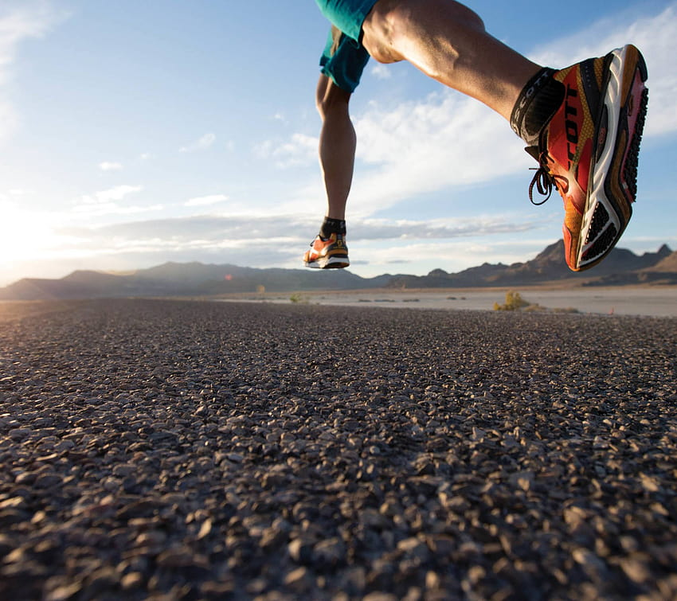
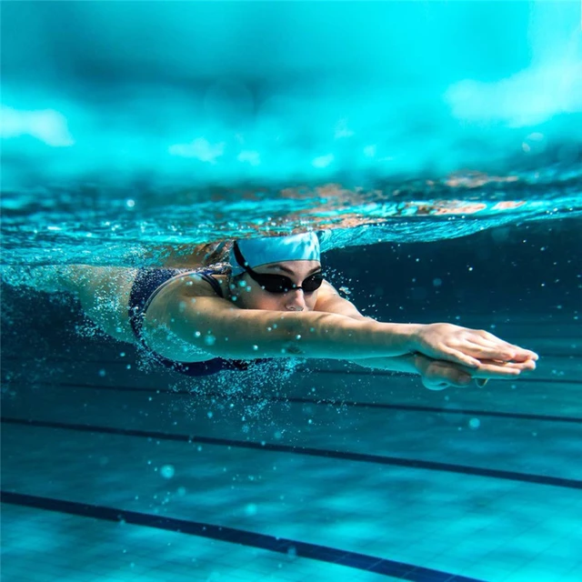
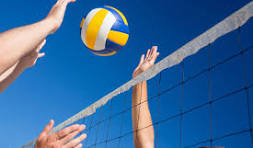

JOGING
Joging secara teratur akan membuat tubuh memiliki respons yang lebih baik terhadap penyakit dan gangguan kesehatan.
Joging secara teratur akan membuat tubuh memiliki respons yang lebih baik terhadap penyakit dan gangguan kesehatan. Aktivitas ini juga merangsang produksi sel darah putih yang membantu melawan infeksi bakteri dan virus. Intinya, joging secara konsisten akan membuat tubuh Anda tetap bugar dan tidak mudah sakit.
BERENANG
Manfaat
Berenang adalah olahraga yang baik untuk semua orang di segala usia. Berenang membantu seseorang untuk tetap bugar dan menjaga kesehatan fisik, juga berdampak baik bagi kesehatan menta<
VOLLEYBALL
SEPAK BOLA
Follow Me

HRDNSYH_6